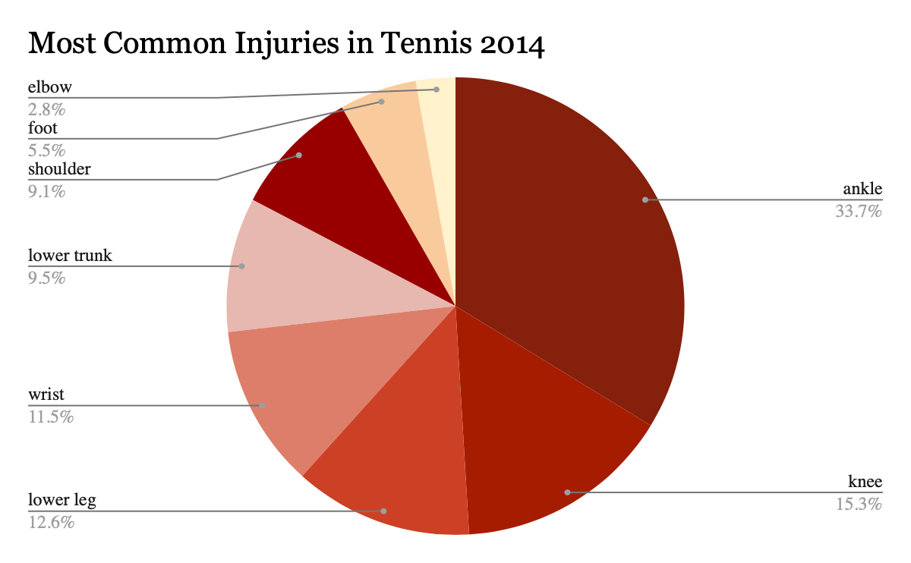
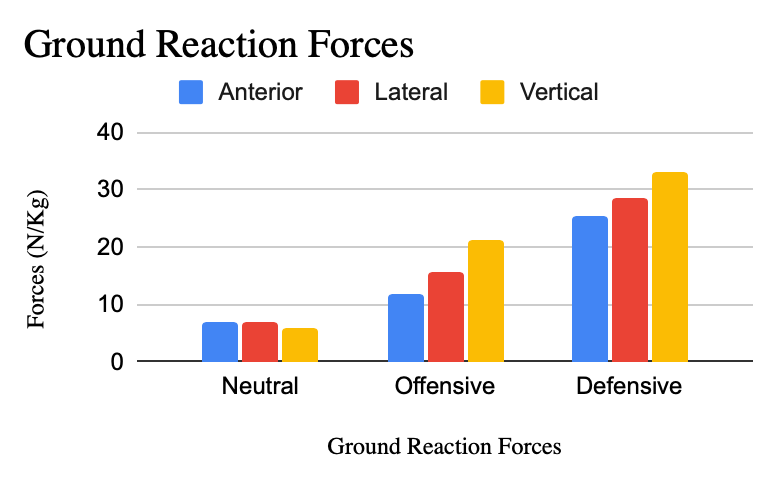
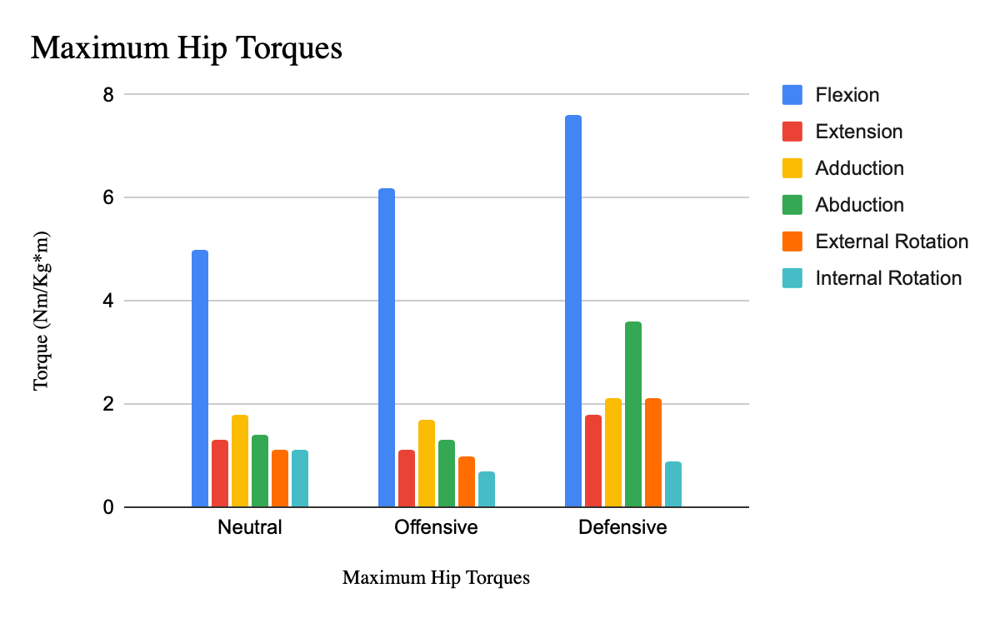
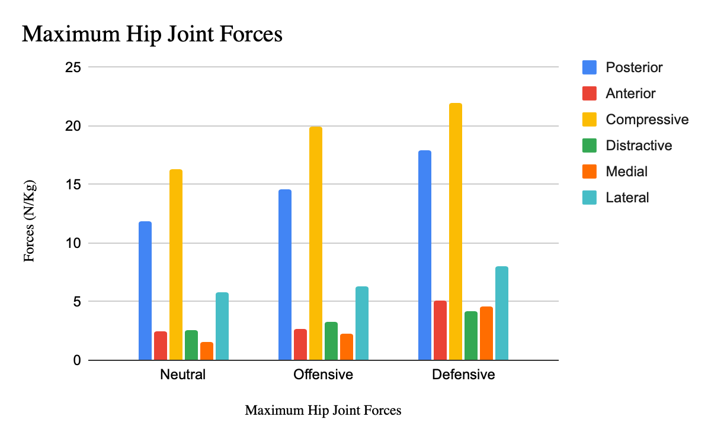
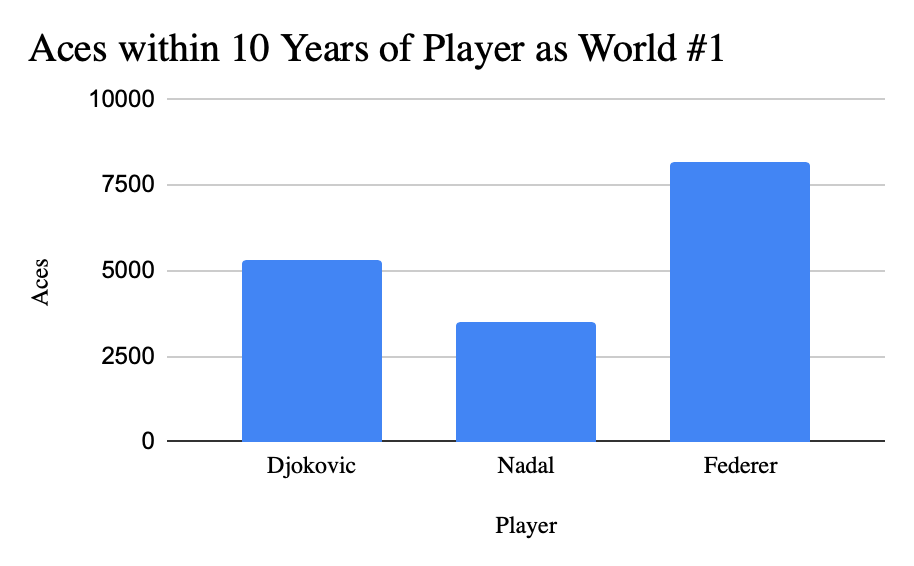

When the Defense Strikes Harder
By Rohan Narayan | September 11, 2018

Tennis players come and go. It is rare to see tennis players sticking it through other than the Big Four. Even with the best players, injuries are common and can cause players to retire for life. If the players have not retired, then the players lose their ability to reach their peak again. However, players such as Novak Djokovic, Roger Federer, and Rafael Nadal have played for decades and maintained their top rank for numerous years. Each player has different strong suits and strategies in tennis. This article will focus on analyzing the different tennis strategies (offensive and defensive) and compare which strategies lead to further injuries and end/diminish their tennis careers.
To start the analysis, we need to see which areas tennis players get injured the most. Regardless of how the tennis players play and with what strategies they use, injuries are common in any sport.
According to the stats of the past 10 years, the ankle injuries have been the most common amongst the rest of the injuries.
This pie chart shows how ankle injuries are one of the most common injuries for tennis plays. This injury is followed by knee injury and lower leg injury in the chart. One noticeable factor here shows how the majority of the injuries are related to the leg motion of the player.
When analyzing leg movement for tennis players, offensive and defensive have different strategies. When an offensive player uses leg motion to play, they usually tend to step forward with their dominant leg and reach out with their dominant arm. This creates a ground reaction force on the leg that moves forward. When a defensive player uses leg motion to play, they usually tend to step backwards with their dominant leg and stretch to the back of the court to return the ball. This creates a ground reaction force on the leg that moves backwards. The following graph shows the ground reaction forces on the players dominant foot for three different strategies: Neutral, Offensive, and Defensive.
The above graph shows the different forces on the dominant foot of the players. The directions vary with anterior, lateral, and vertical directions. The bar graph shows how the force excessively increases for the defensive footwork. This shows that if impact is created, the defensive player’s footwork is most impacted when playing, while the offensive and neutral players have less ground reaction forces. While neutral has the least impact on the players, later in the article we will get into how neutral strategies do not bring a player to a win.
Some other factors that can cause injuries are lower trunk injuries. These can be caused by excessive hip torques. Similarly to leg motion, when the offensive player moves around the court, the player has less twist in their body to receive the ball. When the defensive player moves backwards to reach the ball, there is a greater twist in their body. The following graph shows how the hip torques vary for the three different strategies. The graph further focuses on stressors such as flexion, extension, adduction, abduction, external rotation, and internal rotation.
The graph above shows how the defensive strategies have the most hip torque statistics compared to the other strategies such as neutral and offensive strategies. The hip flexion for defensive players is much higher than the offensive and neutral hip flexions. This shows that players who are primarily defensive players have more exertion on their hips than the offensive players. Some more statistics that support this is the comparison of hip joint forces. Overall the defensive players have more hip joint forces, which affect the players. However there are two very high points for all strategies, the posterior and compressive hip joint forces. Posterior forces are caused by moving backwards or quickly twisting back while the legs are put in their initial position. The compressive force occurs when the player jumps with both their legs. Both motions are very common for almost every strategy and play in tennis.
The above graph shows how if a player focuses on defensive playing, then the force impacts on the hip joints are much more. This could lead to a conclusion that defensive players are subject to more injuries and more extenuating forces on their body. Ultimately, the players who use more defensive strategies face more injuries.
(Neutral Strategies do not gain or lose points.)
However if we go into more detail for the 3 biggest players, Rafael Nadal, Roger Federer, and Novac Djokovic, we see:
Something offensive players really rely on is using their aces. Aces are when the player gets the point on the serve without rallying with their opponent. Rallying definitely takes more bodily exertion than aces in tennis. In the chart below, the Big 3 player’s aces were compared alongside each other for the 10 years each player was ranked world #1 in men’s tennis until 2024.
The above graph shows how within the 10 years each player was at their best, Federer was able to score much more aces than Nadal. This shows how Federer played a game with less physical exertion than Nadal. In contrast to injury history, Nadal has faced almost every injury in the book that was career altering and game postponing, while Roger Federer’s injury history caused him to miss very few major slams. Between the two players, Federer was a more offensive player, and Nadal was a more defensive player. Through the statistics we could see that the defensive player gets more physical exertion onto them compared to an offensive player.
It is definitely harder to make clear statements about Djokovic’s game right now, as he is still playing his best game as World #1 Men’s Tennis Player.
Sources:
https://www.ncbi.nlm.nih.gov/pmc/articles/PMC7734511/
https://www.ncbi.nlm.nih.gov/pmc/articles/PMC5534143/
https://www.ultimatetennisstatistics.com/playerProfile?playerId=4742&tab=statistics#google_vignette
https://www.ultimatetennisstatistics.com/playerProfile?playerId=3819&tab=statistics
https://www.ultimatetennisstatistics.com/playerProfile?playerId=4920&tab=statistics